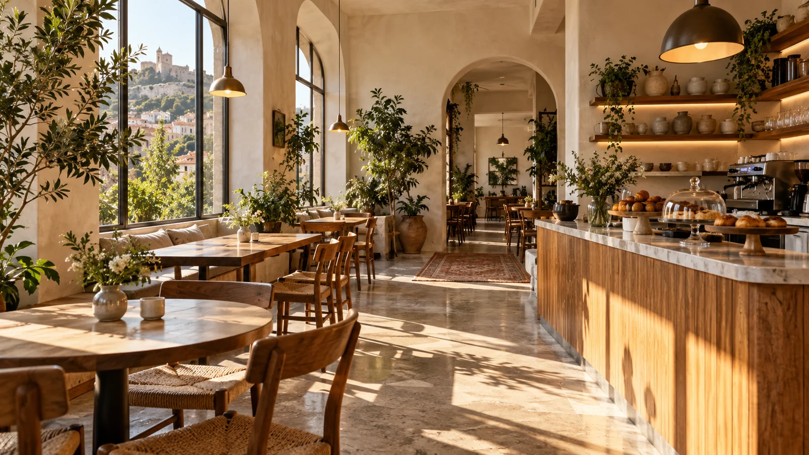

კაპუჩინო ფავორიტი
ესპრესო, რძე და ნაზი ქაფი
შენი პატარა პაუზა თბილისში
თბილი ყავა, ახალი საუზმე და ადგილი,
სადაც არსად გეჩქარება.

01 / ჩვენი ამბავი
მზიური იმ დილებისთვისაა, როცა ყავის სურნელი საკმარისია კარგი დღის დასაწყებად. და იმ შუადღეებისთვის, როცა ქალაქის ხმაურს ცოტა ხნით უნდა გამოეთიშო.
შემოიარე მეგობართან ერთად, წამოიღე წიგნი ან უბრალოდ დაიკავე ადგილი ფანჯარასთან. ჩვენ ყავას მოვამზადებთ.
03 / პატარა მომენტები
ერთი ფინჯანი. ერთი კარგი პაუზა.
04 / გვესტუმრე
თბილისი · ვაკე, მზიურის პარკის მიმდებარედ
სავარაუდო ლოკაცია დემოსთვის — ზუსტი მისამართი დასამატებელია.
მზიურის პარკი რუკაზედილა შენია. ყავა ჩვენზე მოანდე.
დემო სამუშაო საათები05 / კონტაქტი
კითხვა გაქვს ან მეგობრებთან ერთად მოსვლა გინდა?
აქ განთავსდება კაფეს ტელეფონი, ელფოსტა და Instagram.
დემო-საიტი · მზიური გამოგონილი კაფეს კონცეფციაა. ფოტოები ილუსტრაციულია.